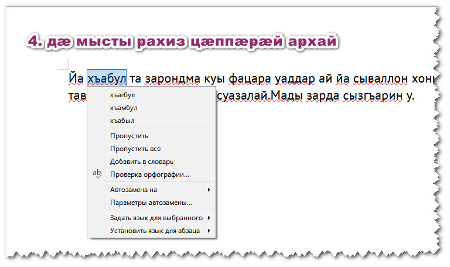

Бæлвырдгæнæн онлайн | ирон æвзаг | ног хабæрттæ | ирон чингуытæ
Офисный пакет LibreOffice — популярный свободный и бесплатный софт с поддержкой форматов MS Office. Пакетом LibreOffice для набора текстов и подготовки их к печати пользуется более 200 млн человек. Теперь в редакторе Writer пакета LibreOffice можно проверять орфографию осетинских текстов простым и удобным способом при помощи дополнения, которое нужно скачать здесь (если загрузка не начнётся, вот альтернативная ссылка).
Скачанный файл IrSpellchecker.oxt нужно два раза щёлкнуть — и он автоматически откроется в LibreOffice, если он установлен на компьютере. После установки дополнения с проверкой осетинской орфографии, на панели инструментов рядом со значком принтера появится значок с осетинским триколором и буквами IR, намекающими на слово «ирон». Выделите фрагмент текста и нажмите кнопку для расставления правильных апостроф и подчёркивания красным неправильно написанных слов.
Проверка орфографии позволяет найти досадные опечатки и быстрее привыкнуть к официальной орфографии. Основано на действующих нормах (свод правил орфографии и орфографические словари).
